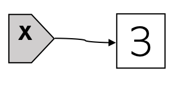
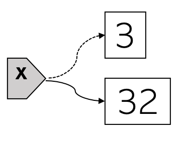
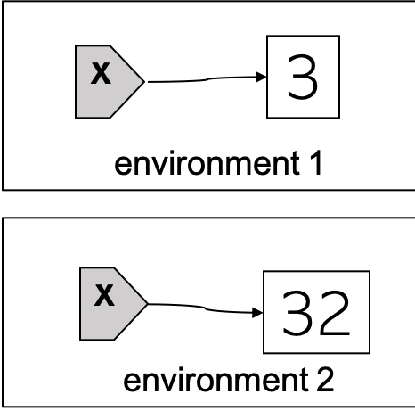

Now we know that R variables are objects, and that they can be manipulated, assigned any R objects and reassigned.1 (detailed discussion here.) We’ll discuss variable shadowing and its difference from variable reassignment.
Variable reassignment in R
After we assign a R object to a variable, the variable will refer to that object. Let’s use a gray rectangular shape to represent the variable, and draw an arrow from the variable pointing to the object. For example, here is what’s going on behind the one-liner x = 3 pictorially:

When a variable is reassigned another object, it won’t refer to the original object anymore. We represent this by changing the original solid arrow to a dashed one. A new solid arrow is drawn from the variable pointing to the new object. For example, the following diagram shows what happens if we reassign x to 32 (x = 32):

The above diagrams depict how variable assignment and reassignment work in both R and Python. Before we talk about how variable shadowing works in R, let’s take a look at how it works in an old programing language called Standard ML (SML).
Variable shadowing in SML
SML doesn’t have variable reassignment or rebinding. For example, consider the same mathematical operation of first setting x to 3 and then to 32. Its SML code is
val x = 3; (* create an environment and inside it bind x to 3*)
val x = 32; (* create a different environment and inside this new environment bind x to 32 *)
The following diagram captures what happens when we run the SML code:

The second x is a new variable different from the first x! It shadows the first x. As a result, if we print x we’d get 32. So the mathematical reassignment operation is carried out by variable shadowing in SML.
Variable shadowing in R
R also has variable shadowing, which happens if the same variable is assigned in different scopes. Reassignment happens if the same variable is assigned twice or more times in the same scope. Consider the following R code, where each function definition creates a new scope:
x = 0 # global x
outer = function() {
x = "The Great Gatsby" # outer x
inner = function() {
x = TRUE # inner x
print(paste("inner:", x))
}
inner() # call function inner()
print(paste("outer:", x))
}
{
outer() # call function outer()
print(paste("global:", x))
}## [1] "inner: TRUE"
## [1] "outer: The Great Gatsby"
## [1] "global: 0"From the above printed output, we see the x inside inner() shadows the x between inner() and outer(), which further shadows the x outside of outer(). This can be seen more clearly from the following diagram:

-
The terms “variable (re)assignment” and “variable (re)binding” are used interchangeably throughout this series because we use them for their mathematical meaning: (re)associate a symbol with a value. ↩